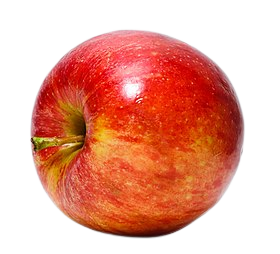

Informações Nutricionais
Nome: Maçã
Descrição: A maçã é uma fruta de forma arredondada, geralmente de cor vermelha, verde ou amarela, com uma casca fina e polpa suculenta. Ela é uma das frutas mais consumidas em todo o mundo.
Vitaminas: A maçã é uma excelente fonte de vitaminas, principalmente vitamina C e algumas do complexo B, como a vitamina B6.
Calorias: Uma maçã média tem cerca de 95 calorias, tornando-a uma opção saudável para lanches e dietas de baixa caloria.
Benefícios: A maçã oferece diversos benefícios para a saúde, incluindo:
- Ajuda na digestão devido ao teor de fibras, auxiliando na regularidade intestinal.
- Redução do risco de doenças cardíacas devido à presença de fibras solúveis e potássio.
- Controle dos níveis de açúcar no sangue devido à sua baixa carga glicêmica.